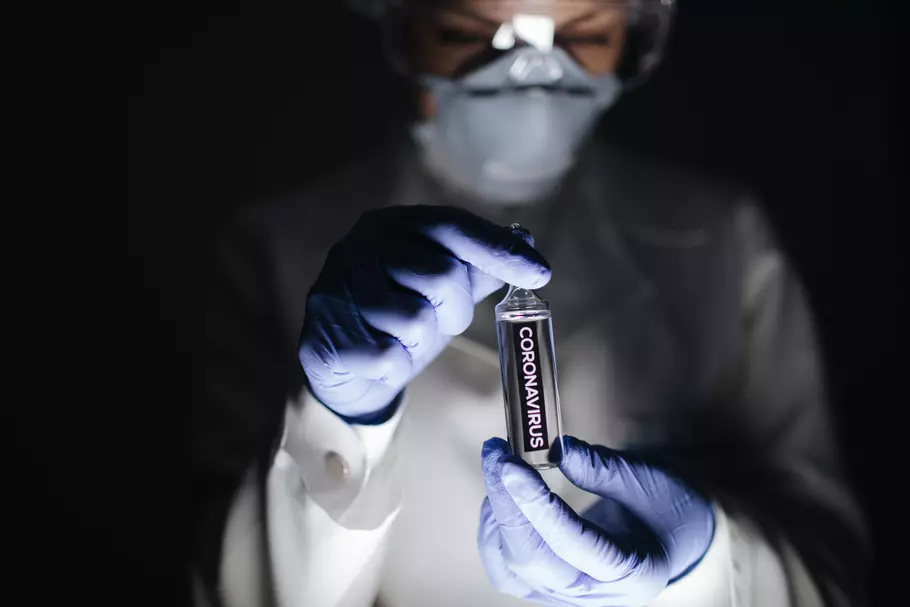
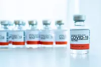

Au fil des mois, la prise en charge des malades du coronavirus a évolué. Si aucun traitement avec une activité virale directe n'a fait la preuve scientifique de son efficacité pour combattre le SARS-CoV-2, plusieurs sont administrés selon la gravité de la maladie. En parallèle, la vaccination a débuté en décembre 2020 avec le premier vaccin ARN autorisé chez l'homme.
Soigner et vaincre la maladie Covid-19 : traitements et vaccinss
Aucun traitement avec une activité virale directe n'a fait la preuve scientifique de son efficacité pour combattre le coronavirus SARS-CoV-2 responsable de la maladie Covid-19.
La prise en charge s'adapte à la forme de la maladie : légère (ne nécessitant pas d'hospitalisation) ou sévères (avec une hospitalisation voire une admission en réanimation).
Dans les formes légères, en cas de fièvre, il est par exemple conseillé de prendre du paracétamol et non des anti-inflammatoires qui peuvent faire flamber l'infection.
Il faut surveiller l'évolution des symptômes et en cas d'aggravation avec difficultés à respirer, appeler le 15.
Pour les formes sévères, d'autres traitements sont employés comme les corticoïdes, .support en oxygène, support ventilatoire... Voici la liste des traitements possibles en cas d'infection Covid-19.
l n'existe pas de médicament pour soigner le nouveau coronavirus. Le paracétamol, pour une forme légère du Covid, permettra de faire baisser la fièvre et calmera les éventuelles douleurs musculaires. Il n'a toutefois aucune propriété antivirale. Noter qu'il est recommandé, pour un adulte, de ne pas consommer plus de trois grammes de paracétamol par jour, de ne pas dépasser plus de 1 gramme par prise et d'espacer les prises d'au moins 4 heures.
Les corticoïdes pour les formes graves
Les corticoïdes, la dexaméthasone en premier lieu, sont désormais recommandés dans la prise en charge des formes graves du Covid-19. "L'étude anglaise Recovery a démontré formellement que 6 mg de dexaméthosone, un anti-inflammatoire à base de corticoïdes - par jour permet d'éviter des décès. Utiliser des corticoïdes contre le syndrome de détresse respiratoire, ce n'est pas nouveau. Mais désormais, on a la preuve que ça marche, ce qui a permis d'harmoniser les pratiques", commente le professeur Mathieu Molimard, chef du service de pharmacologie médicale au CHU de Bordeaux et membre du conseil d'administration de la SFPT. En cas de tension d'approvisionnement de la dexaméthasone, le Haut conseil de santé public recommande l'utilisation de méthylprednisolone, de prednisone ou d'hydrocortisone. Selon l'OMS, ce traitement permettrait de réduire d'environ un tiers la mortalité des patients placés sous respirateur et d'environ un cinquième la mortalité des patients placés uniquement sous oxygène. Noter qu'il est inutile de prendre de la dexaméthasone pour des formes bénignes de la maladie.

Vaccin AstraZeneca-Oxford : pas de "sur-risque" pour la France, composition, efficacité...
Le vaccin AstraZeneca est suspendu au Danemark, en Islande et en Norvège. En France, "il n'y a pas lieu de suspendre la vaccination" a déclaré Olivier Véran.
Ce vaccin utilise un adénovirus pour déclencher une réponse immunitaire face au coronavirus de la Covid-19.
Quelle est son efficacité ? Contre les variants ?
Quelle différences avec Pfizer ? Où trouver son RCP ?
Quelles contre-indications ?
Infos.
[Mise à jour le jeudi 11 mars à 18h26] Distribué depuis le 6 février en France, le vaccin AstraZeneca est administré au grand public par les médecins généralistes, les médecins du travail et les pharmaciens (depuis le 10 mars). Au Danemark, les autorités sanitaires annoncent le 11 mars suspendre la vaccination contre la Covid avec ce vaccin "après des rapports de cas graves de formation de caillots sanguins chez des personnes qui ont été vaccinées avec le vaccin Covid-19 d'AstraZeneca", a indiqué l'Agence nationale de la Santé, tout en précisant qu' "à l'heure actuelle, on ne peut pas conclure à l'existence d'un lien entre le vaccin et les caillots sanguins". "Mettre l'un des vaccins en pause n'est pas une décision facile, a indiqué Søren Brostrøm, directeur du Conseil national de la santé du pays, à Politiken. Mais précisément parce que nous en vaccinons un si grand nombre, nous devons également réagir avec des soins opportuns lorsque nous avons connaissance d'éventuels effets secondaires graves ".
© Created by Dame Gueye Djamil